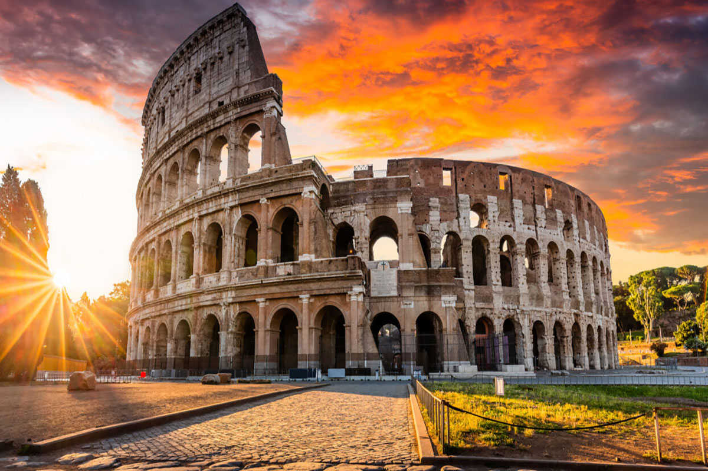

Koloseum w Rzymie
Koloseum w Rzymie, zwane również Amfiteatrem Flawiuszów, to monumentalna budowla zbudowana w latach 70–80 n.e. Jego ogromna pojemność sięgała nawet 80 tysięcy widzów, którzy przychodzili, by oglądać walki gladiatorów i inne spektakle. Dzisiaj to symbol starożytnego Rzymu, będący ważnym miejscem turystycznym, przyciągającym zwiedzających z całego świata, chcących doświadczyć historii i architektonicznej wspaniałości starożytnego świata.
Powrót do Menu
